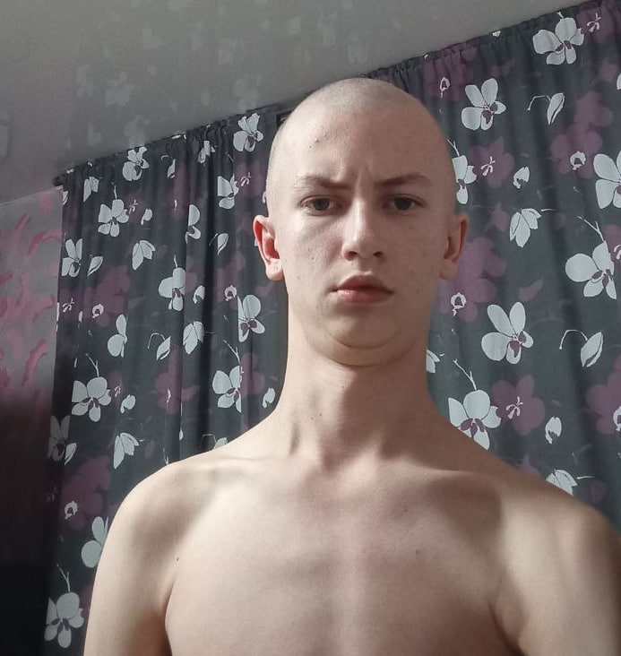
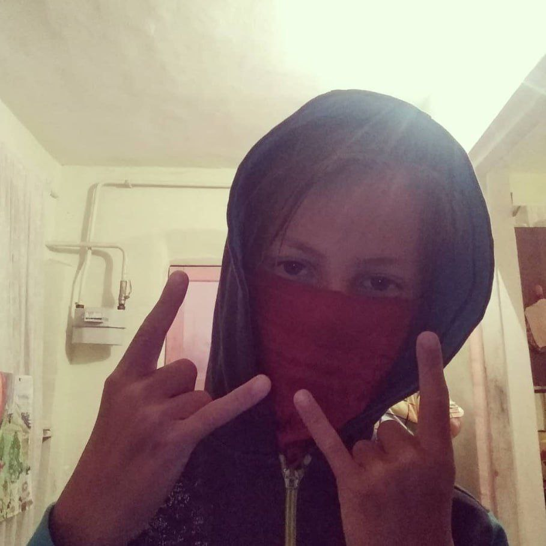
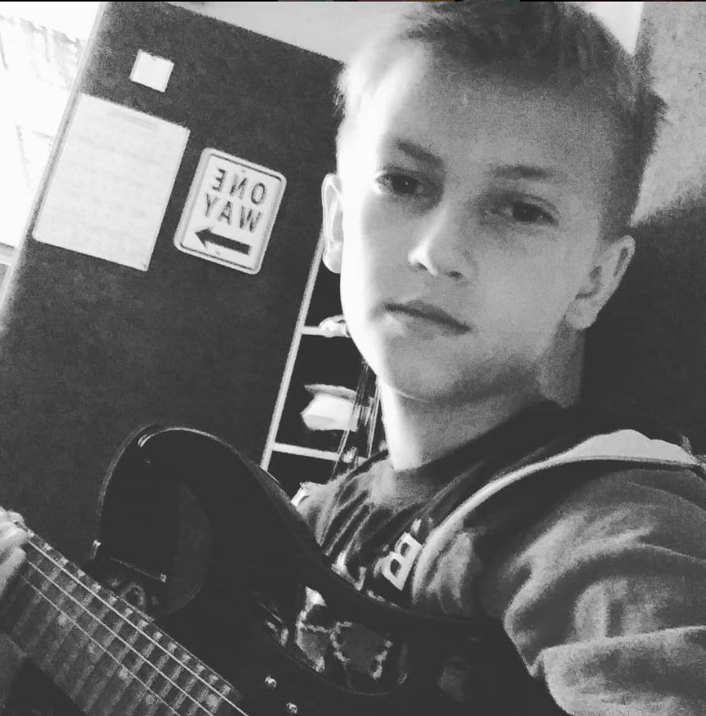
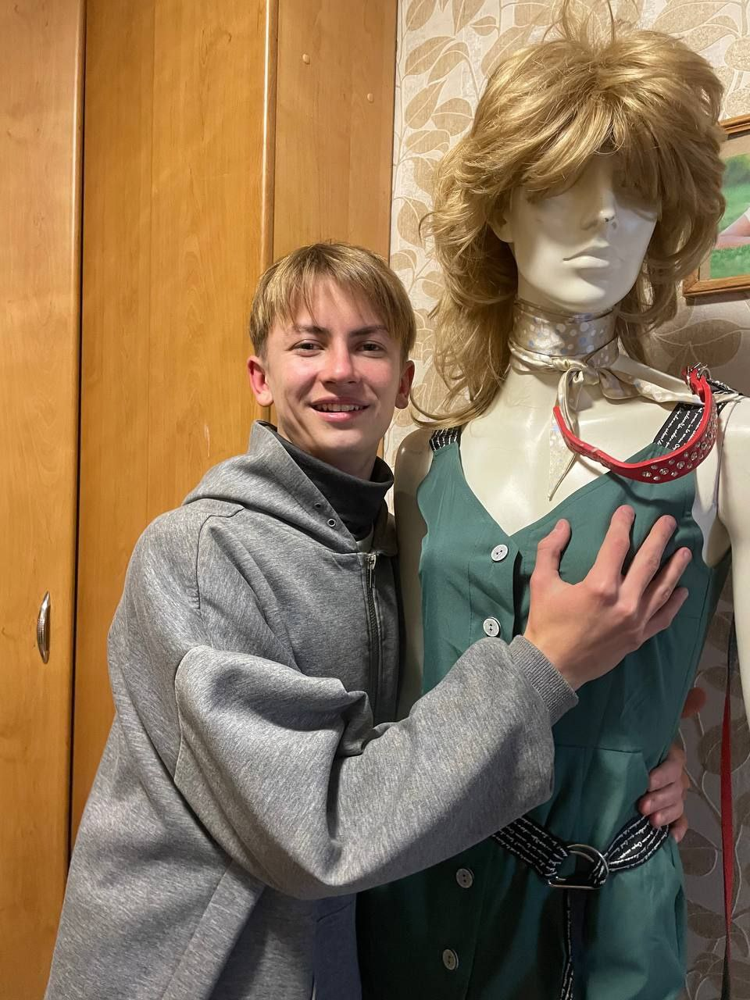
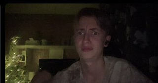
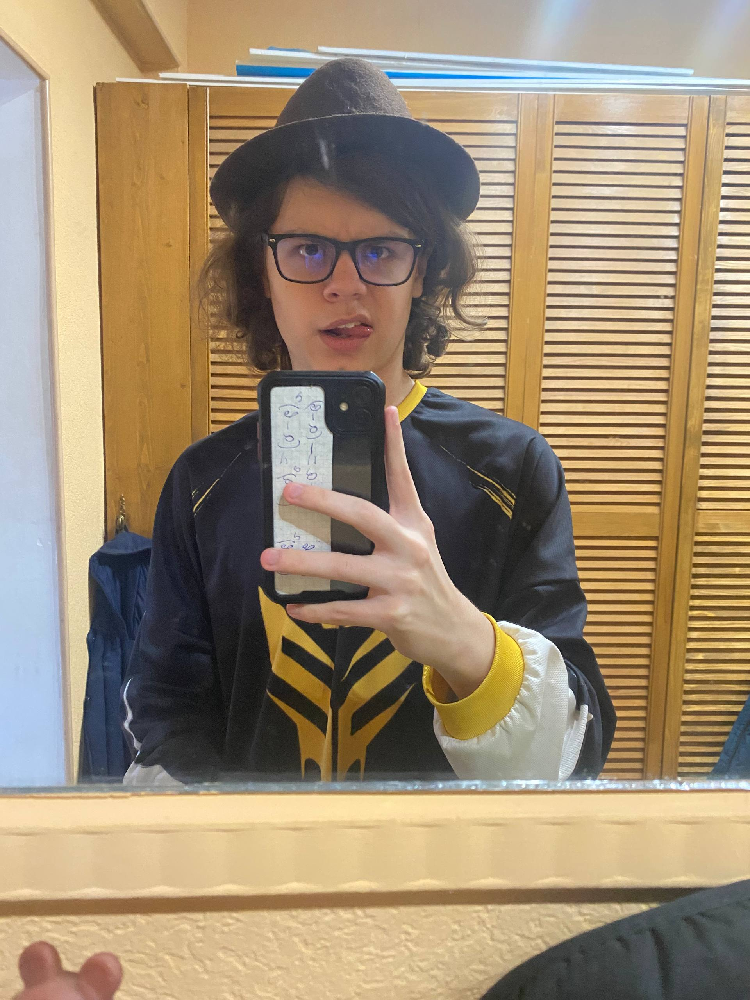
Иван Зоуви
Всегда рядом в трудные моменты.
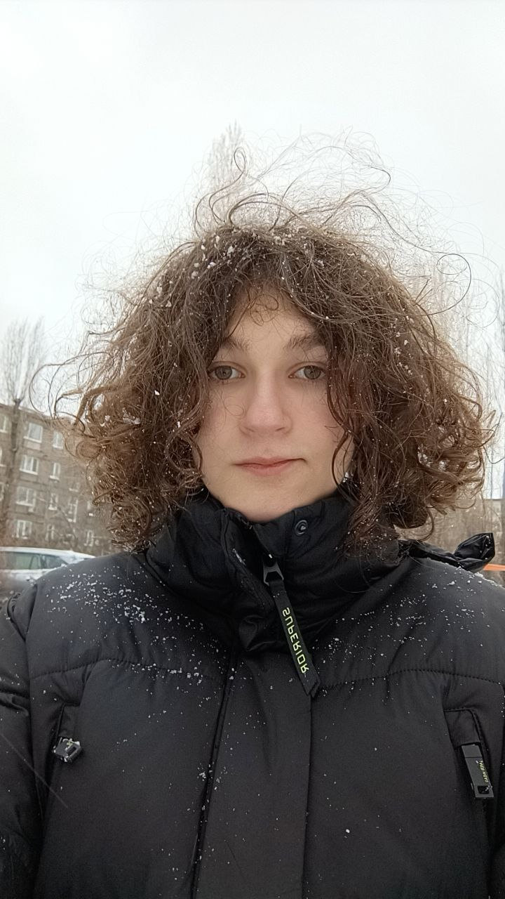
Слава Мирвел
Поддержка без лишних слов.
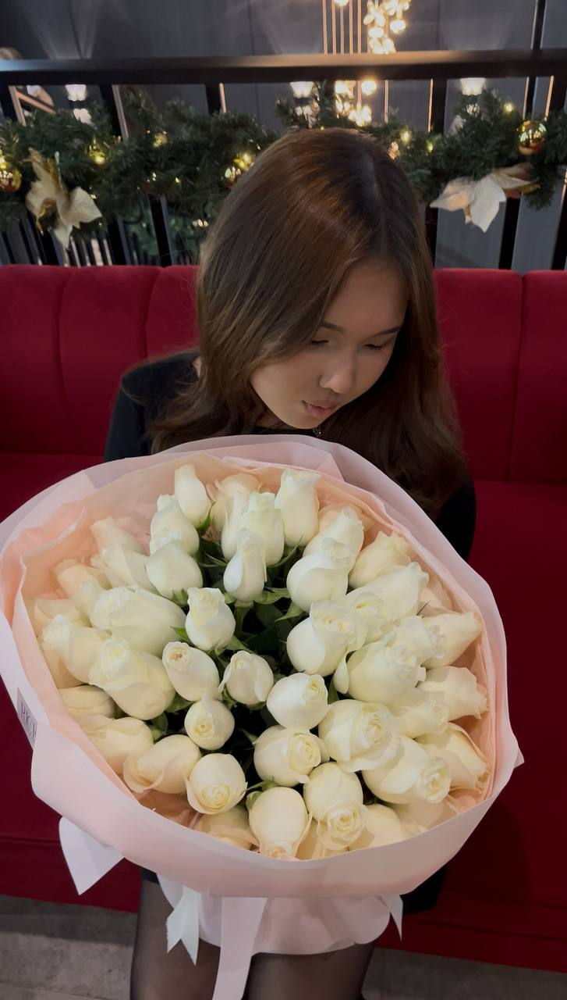
Адель Скалка
Умеет поддержать и сказать нужные слова.
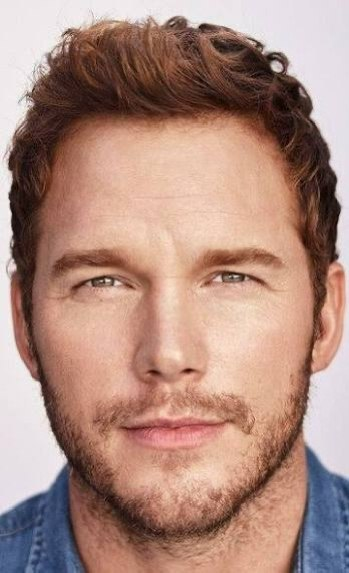
СерГей
Надёжный человек, который не бросает своих.
Помочь Ярославу напрямую
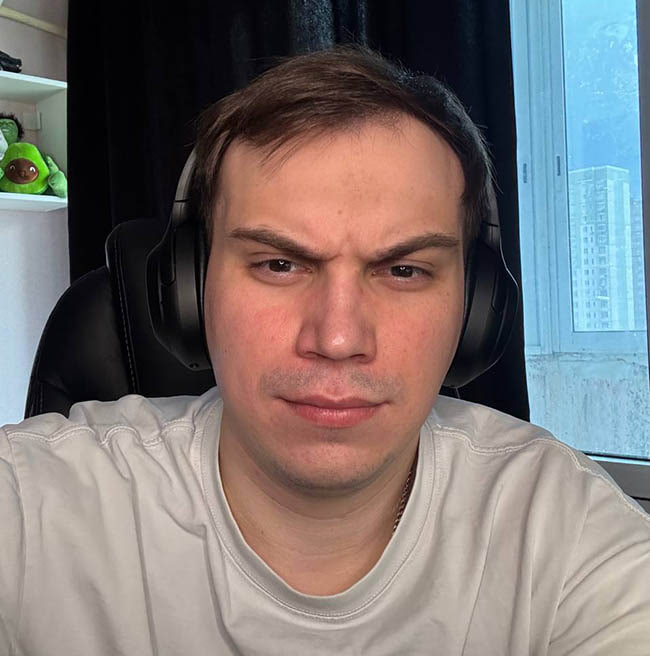
Поддержал проект без лишних вопросов.
Донат: $420
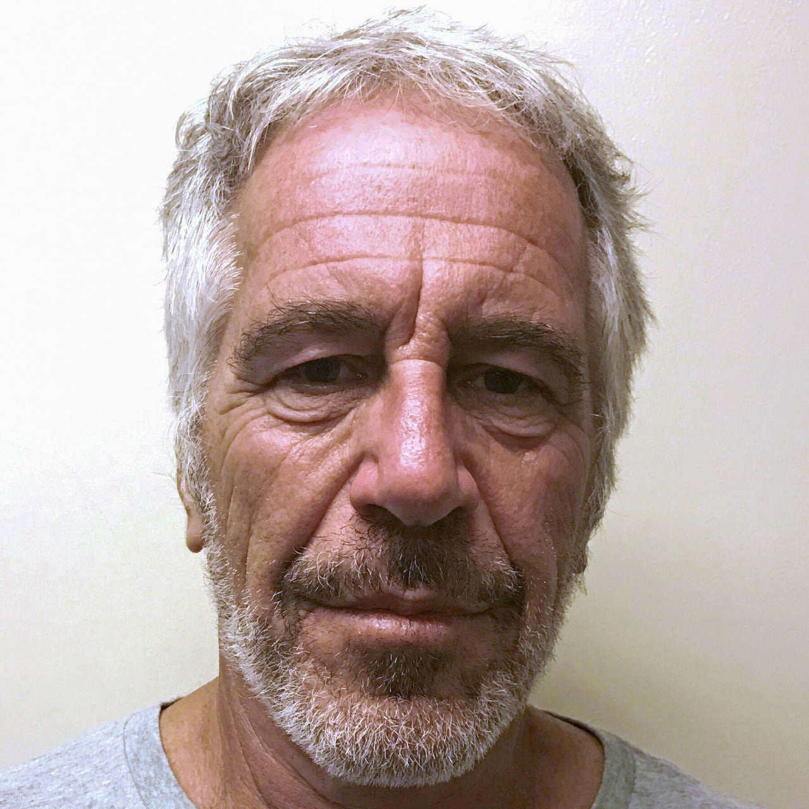
Анонимный меценат с иронией и стилем.
Донат: $666
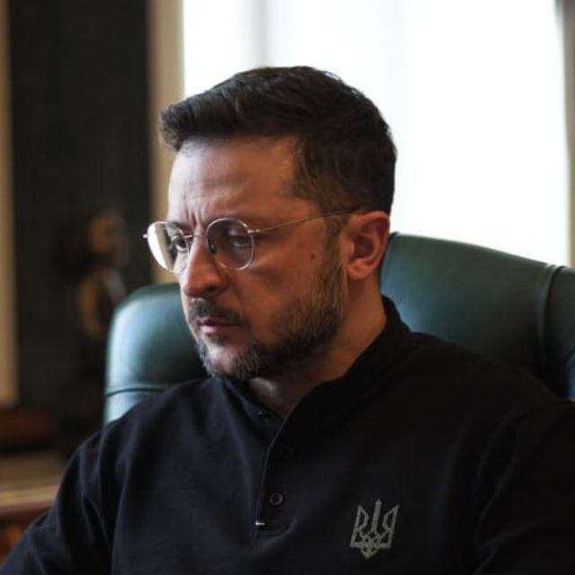
Жест солидарности и человеческой поддержки.
Донат: $1337
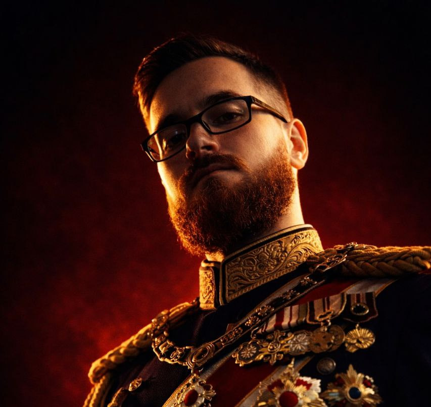
Поддержка от яркой личности с большим сердцем и своим стилем.
Донат: $888